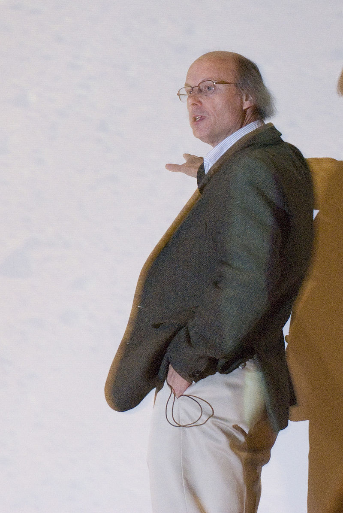

Learn Cpp
|  | (Bjarne Stroustrup).. بيارن ستروستروب |
|---|---|
|
بين عامي 1980-1990 , استطاع تطوير لغة الي بلس بلس التي صممت للمبرمجين
وأثرت هذه اللغة على باقي اللغات كالجافا والسي شارب وغيرها . وسي بلس بلس يبقى إلى الآن لغة برمجة عالية المستوى وما زالت تستعمل من قبل ملايين المبرمجين.
بيارن وعائلته يعيشون الآن في نيويورك، الولايات المتحدة. وقد كان لسنوات عديدة باحث في مختبرات بيل هو عالم حاسوب والمعروف لإختراعه وتطويره للغة البرمجة سي بلس بلس حالياً هو استاذ باحث ويتولى رئاسة كلية الهندسة في جامعة تكساس إيه اند إم. استاذ زائر في جامعة كولومبيا والمدير العام في مؤسسة مورغان ستانلي في نيويورك |
|
|
أ لف بيارن كتاب "لغة البرمجة سي++" وكان الأكثر مبيعا في وقته وقد تم ترجمته إلى 25 لغة مختلفة، ومن كتبه :
Principles and Practice Using C++ (عام 2008) C++ (2000) The Design and Evolution of C++ (1994) The Annotated C++ Reference Manual (1990) | |

2017 © By Islam Al-shabak